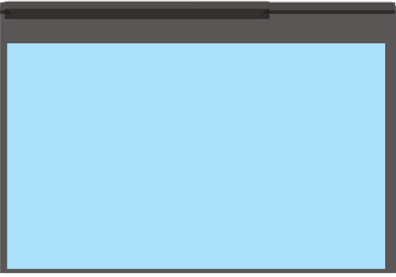
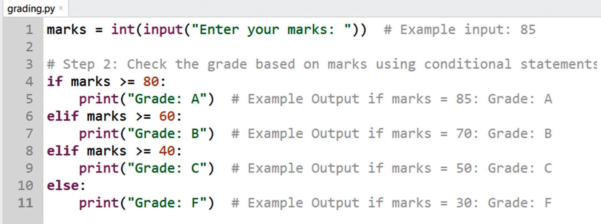
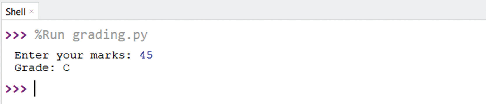

Write a Python program that asks the user to enter their marks and then assigns a grade based on the following criteria:
(i) 80 and above → Grade A
(ii) 60 to 79 → Grade B
(iii) 40 to 59 → Grade C
(iv) Below 40 → Grade F
Your program should:
(i) Ask the user to input their marks.
(ii) Convert the input to an integer.
(iii) Use if, elif, and else statements to determine the grade.
(iv) Print the assigned grade.
A solution to a Program example 5.1 as written in Notepad++:
Program example 5.1:
Grading system with decision making

When the data is input as 45, the system will give feedback as follows:

Note: The user inputs their marks, and the program decides the grade based on
conditions.